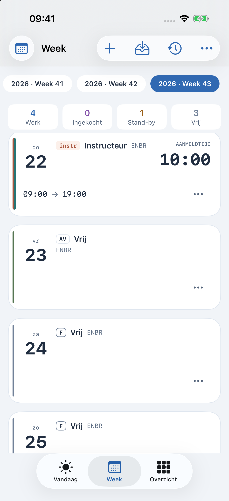
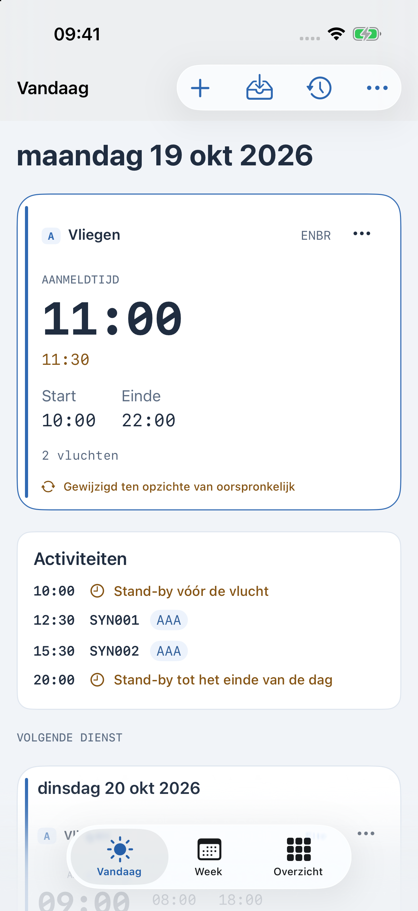
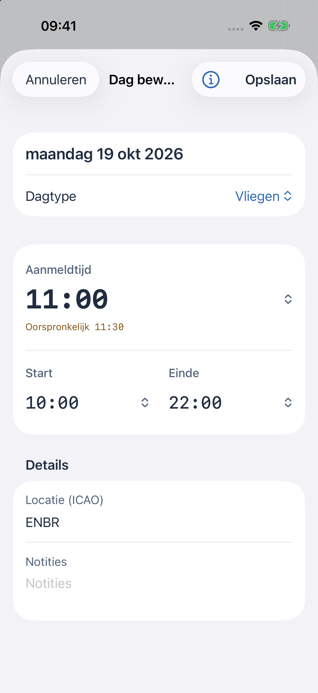

Huidige bèta · iPhone, iPad en Apple Watch
CrewSchedule
Je rooster.
Helder.
Je diensttijden, dag voor dag. Zie wat eraan komt en wat er is veranderd.
De schermafbeeldingen tonen een fictief voorbeeldrooster.


Het rooster met zijn historie
Zie wat
er is veranderd.
De meldtijd is verschoven van 11:30 naar 11:00. De oorspronkelijke tijd blijft naast de nieuwe tijd zichtbaar.
Automatisch importeren instellen
iPhone. iPad. Apple Watch.
Je rooster,
waar je het nodig hebt.
Houd het persoonlijk. Importeer en gebruik je rooster op dit apparaat. iCloud-synchronisatie is optioneel.
Kies je Agenda. Koppel agenda’s als je roosterwijzigingen daar wilt zien.
Neem het mee naar Watch. Een gekoppelde Apple Watch kan een eigen kopie van het rooster bewaren en de volgende dienst tonen.
Een roosterhulp voor je planning. Volg de actuele operationele instructies van je werkgever.
CrewSchedule · Huidige bèta
Een duidelijkere manier
om je rooster bij te houden.
Vraag naar deelname aan de bèta of stuur een vraag over de app.
Vraag naar de bèta